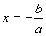
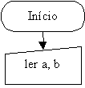
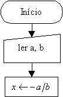
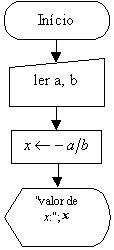
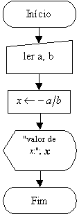
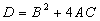
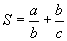

Exemplos Práticos de Construções de Lógicas e Fluxogramas
Exemplo 3:
Fazer um fluxograma para a resolução de uma equação do primeiro grau: ax + b = 0
a e b são valores conhecidos e x o valor que queremos descobrir.
Com um pouco de conhecimento sobre o assunto, sabemos que o valor de x é dado da seguinte forma:

Uma observação importante é que, a e b são valores genéricos, ou seja, não importa o valor deles, a solução é dada pela fórmula acima.
No mundo real:
- Alguém nos fornece os valores de a e de b;
- Substituímos os valores fornecidos na fórmula e encontramos o valor de x;
- Mostramos o resultado a quem possa interessar.
Nos conceitos da programação:
Entradas de Dados:
Fornecimento, pelo usuário, dos valores para a e b.
Processamento:
Cálculo do valor de x.
Saídas de Dados:
Imprimir o valor de x.
O FLUXOGRAMA:
- Iniciamos o fluxograma.
- A seguir temos os valores desconhecidos a serem digitados pelo usuário e atribuídos às letras a e b:
- Realizamos o cálculo de x; um cálculo é uma operação interna do computador, por isto é um processamento:
- Em seguida mostramos o valor de x no monitor do usuário:
- Finalizamos o fluxograma:




Se você não lembra o significado dos símbolos utilizados, então clique aqui.
Comentários:
- Observe que o problema é diferente, porém sua estrutura lógica é igual as duas estruturas anteriores, mostrando a importância de fixar-se o raciocínio em ENTRADA- PROCESSAMENTO- SAÍDA.
- Observe que no símbolo de saída, a frase: "valor de x:" foi colocada entre aspas para simbolizar que esta é a frase que deverá ser exibida pelo programa.
- Há uma pequena falha nesta lógica, ela será comentada mais adiante, quando falaremos sobre decisões lógicas.
- Faça um fluxograma para o cálculo da seguinte expressão:
- Faça um fluxograma para o cálculo da seguinte soma:



| Página Anterior | Próxima Página |